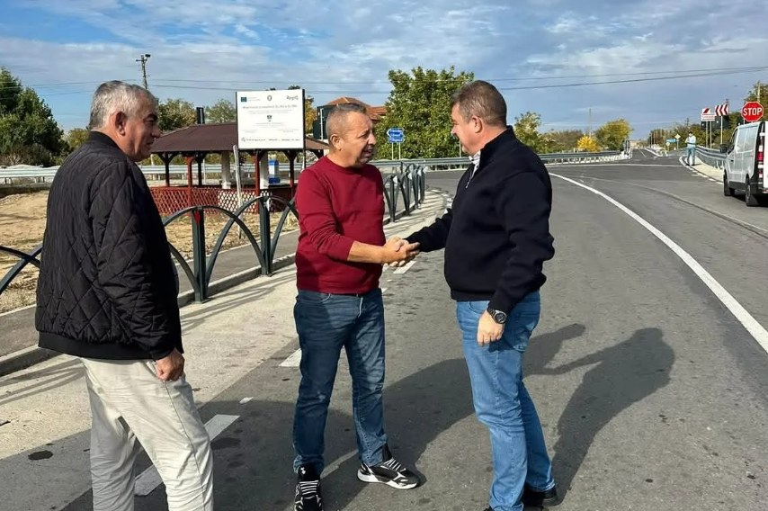
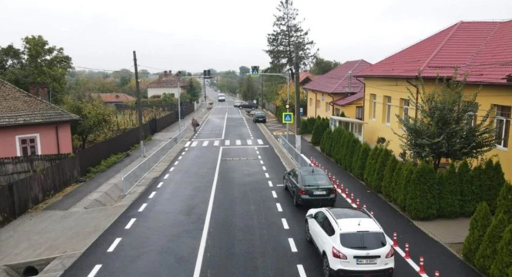

Încă o investiție importantă în infrastructura rutieră a județului a ajuns la final. Drumul județean 562, pe tronsonul Stârmina – Scăpău – Devesel, a fost recepționat după lucrări de modernizare pe o lungime de aproape 13 kilometri, în valoare de aproximativ 39 de milioane de lei, finanțate din fonduri europene. Anunțul a fost făcut de președintele Consiliului Județean Mehedinți, Aladin Georgescu. Pentru oamenii din satele de pe traseu, recepția înseamnă sfârșitul perioadei de șantier, cu restricții și ocolișuri, și începutul unei circulații mai sigure și mai rapide.
Imaginile de pe traseu arată o schimbare radicală: covor asfaltic nou, marcaje rutiere proaspete, parapeți metalici pe porțiunile cu risc, trotuare pentru pietoni și treceri de pietoni semnalizate în dreptul instituțiilor din localități.
Ce s-a făcut pe cei aproape 13 kilometri
Un astfel de proiect de modernizare nu înseamnă doar un strat nou de asfalt. Pe traseu se observă o serie de lucrări care cresc confortul și, mai ales, siguranța celor care folosesc drumul:
- refacerea îmbrăcăminții asfaltice pe toată lungimea traseului, cu o suprafață de rulare uniformă;
- marcaje rutiere longitudinale și transversale, inclusiv benzi de separare a sensurilor;
- parapeți metalici de siguranță în curbe și pe zonele cu diferență de nivel;
- trotuare și acostamente amenajate, astfel încât pietonii să nu mai circule pe carosabil;
- treceri de pietoni semnalizate, cu indicatoare luminoase, în zona școlilor și a instituțiilor publice;
- indicatoare rutiere noi și semnalizare de orientare spre localitățile din zonă.

Fonduri europene pentru drumurile județene din Mehedinți
Modernizarea DJ 562 a fost realizată prin Consiliul Județean Mehedinți, cu bani europeni, fără ca întreaga povară financiară să cadă pe bugetul local. Tronsonul Stârmina – Scăpău – Devesel leagă localități din zona de sud a județului, iar drumul face legătura și cu direcțiile spre Burila Mare și Rogova, după cum arată indicatoarele de pe traseu.
De ce contează un drum bun pentru satele din Mehedinți
Pentru comunele din sudul și estul județului, drumurile județene și comunale sunt adevărate „artere” economice. Pe ele circulă zilnic navetiștii spre Drobeta-Turnu Severin, Vânju Mare sau Strehaia, microbuzele școlare, ambulanțele și utilajele agricole. Un drum degradat înseamnă timp pierdut, costuri mai mari cu întreținerea mașinilor și, nu de puține ori, accidente.
Un drum modernizat aduce, în schimb, beneficii concrete:
- timp de deplasare mai scurt între localități și spre orașe;
- intervenții mai rapide ale ambulanțelor, pompierilor și echipajelor de poliție;
- acces mai ușor la piață pentru fermieri și producătorii locali;
- siguranță sporită pentru pietoni și copiii care merg la școală;
- o zonă mai atractivă pentru investitori și pentru tinerii care aleg să rămână acasă.

🚧 Pe scurt
Lucrare: modernizare DJ 562, tronsonul Stârmina – Scăpău – Devesel
Beneficiar: Consiliul Județean Mehedinți
Finanțare: fonduri europene
Lungime: aproape 13 kilometri
Valoarea investiției: aproximativ 39 de milioane de lei
Ce include: asfalt nou, marcaje, parapeți, trotuare, treceri de pietoni, semnalizare
Stadiu: lucrări finalizate și recepționate
Ce înseamnă recepția lucrărilor
Recepția la terminarea lucrărilor este etapa în care beneficiarul, alături de comisia de recepție, verifică dacă tot ce a fost prevăzut în proiect a fost executat corect și la calitatea cerută. Abia după acest moment drumul este considerat finalizat oficial. Urmează perioada de garanție, în care constructorul are obligația să remedieze pe cheltuiala sa eventualele defecte apărute.
Pentru șoferi, recomandarea rămâne aceeași: chiar dacă drumul este nou, respectați limitele de viteză, mai ales în localități și în dreptul trecerilor de pietoni. Un asfalt bun nu trebuie să devină un motiv pentru viteză excesivă.
Urmăriți secțiunea Actualitate de pe MehedintiAzi.ro pentru cele mai noi informații despre investițiile din județ și pagina de Facebook Mehedinți Azi.
Redactia MehedintiAzi.ro